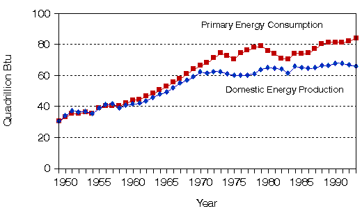
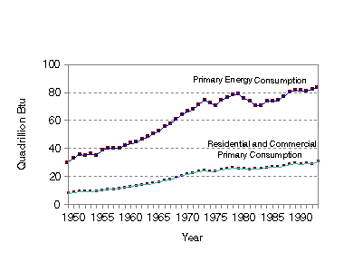

Overview
Total Residential and Commercial Primary Consumption by Type of
Building

Sources: Energy Information
Administration, Office of
Energy Markets and End Use, EIA-457 of the 1980 Residential Energy Consumption Survey
and Form EIA-871 of the 1989 Commercial Buildings Energy Consumption
Survey.

Introduction
The Energy Information Administration (EIA) collects data on energy consumption,
expenditures, and other energy-related topics in the major energy-consuming sectors of the U.S.
economy. The residential and commercial sectors are two major sectors that many energy
analysts like to consider together, as energy use is primarily related to the building shell and the
stock of energy-consuming goods within the shell in these sectors. EIA conducts separate
surveys for the two sectors, the Residential Energy Consumption Survey (RECS) and the
Commercial Buildings Energy Consumption Survey (CBECS).1 Prior to the first
CBECS, there was a very poor understanding of the complexities of energy use in commercial
buildings, or the amount of energy consumed in the commercial sector. This report summarizes
and synthesizes energy data that were collected by these two surveys during the 1980’s, when
major changes in energy policy were implemented following the energy crisis decade of the
1970’s.
The six RECS and four CBECS data bases from the ten consumption surveys over the 1979 to
1990 time frame contain a wealth of energy end use information on residential and commercial
buildings. This is the first report to present a unified vision of energy use in residential and
commercial buildings. This report presents energy data that are consistent between the two
sectors and across the decade of the 1980’s. This report differs from previous consumption
reports because all consumption statistics are reported in terms of primary electricity
consumption and site energy for all other energy sources.2
The availability of inexpensive, secure energy became less certain by the early 1970’s.
Although energy demand (total energy consumption, Figure 1.1) had continued its long rise into
the 1970’s, the production of domestic oil (a primary source of energy) peaked in 1970 and
forced greater reliance on energy imports. The Arab oil embargo in 1973-1974 served as the
catalyst for the energy crisis; oil supplies were constrained and energy prices rose sharply. In
both the 1970’s and 1980’s, the price of oil had a large impact on the economy, the price of
other fuels, and on total energy consumption. Both the sharp price increase in 1974 and again in
1979 (following the 1978 Iranian revolution) contributed to economic downturns and fueled
much of the high inflation of the period.
During the 1970’s, the promise of higher energy prices for the foreseeable future and the
uncertainty of adequate supplies led to public discussion and development of a comprehensive
energy policy that could produce long-term solutions to the energy crisis. Four generally agreed
upon goals of the policy were: adequate energy supplies, reduced dependence on energy imports,
protection against the disruption of foreign supplies, and increased conservation and efficiency
in end uses.
Many energy programs were put into place during the 1970’s and 1980’s to lessen the
dependence upon foreign oil supplies and to improve how all forms of energy are used. A
significant percent of total energy consumption occurred in the residential and commercial
sectors (Figure 1.2). This report concentrates on the physical makeup of the residential and
commercial buildings sectors and their use of energy, and examines changes that occurred
during the 1980’s.
The remainder of this chapter presents a summary of major findings. The following three
chapters focus on different aspects of the overarching theme of buildings and energy in the
1980’s. Chapter 2 discusses major characteristics of residential and commercial buildings.
Chapter 3 considers the major energy sources and end uses in terms of number of buildings and
floorspace. Chapter 4 focuses on energy consumption and expenditures. Chapters 2, 3, and 4
contain tables at the end of each chapter that summarize data from detailed tables that are
available separately on diskette or via EIA’s Electronic Publishing System (EPUB). Following
the body of the report, appendices and a glossary provide additional information on the
methodologies used in this report and on the residential and commercial building consumption
surveys on which this report is based.
1 Residential Energy Consumption Surveys were
conducted in 1980, 1981, 1982, 1984, 1987, and 1990. Commercial Buildings
Energy Consumption Surveys were conducted in 1979, 1983, 1986, and 1989.
Prior to the 1989 CBECS, that survey was called the Nonresidential Buildings
Energy Consumption Survey. The RECS and CBECS are presently conducted
triennially and each supports two major publications, one covering buildings
characteristics, and one covering energy consumption and expenditures.
2 Primary electricity consumption takes into account the energy
inputs used to produce and transmit electricity. Site energy consumption
is the amount of energy delivered to a site. See Appendix C, "Data Quality."
Figure 1.1. Domestic Energy Production and Primary Domestic Energy
Consumption, 1949-1993

Source: Energy Information Administration, Annual Energy Review 1993,
DOE/EIA-0384(93).
Figure 1.2. Primary Energy Consumption and Primary Residential and Commercial
Consumption, 1949-1993

Source: Energy Information Administration, Annual Energy Review 1993,
DOE/EIA-0384(93).
View and/or Print Full Report


File Last Modified: October 15, 1995
- Contact:
- aswenson@eia.doe.gov
- Alan Swenson
- Principal Author
-
- Contact:
- Joelle Michaels
- joelle.michaels@eia.doe.gov
- CBECS Manager
-
URL: http://www.eia.gov/consumption/commercial/data/archive/cbecs/cbecs2r.html
If you are having any technical problems with this site, please contact the EIA Webmaster at
wmaster@eia.doe.gov
|